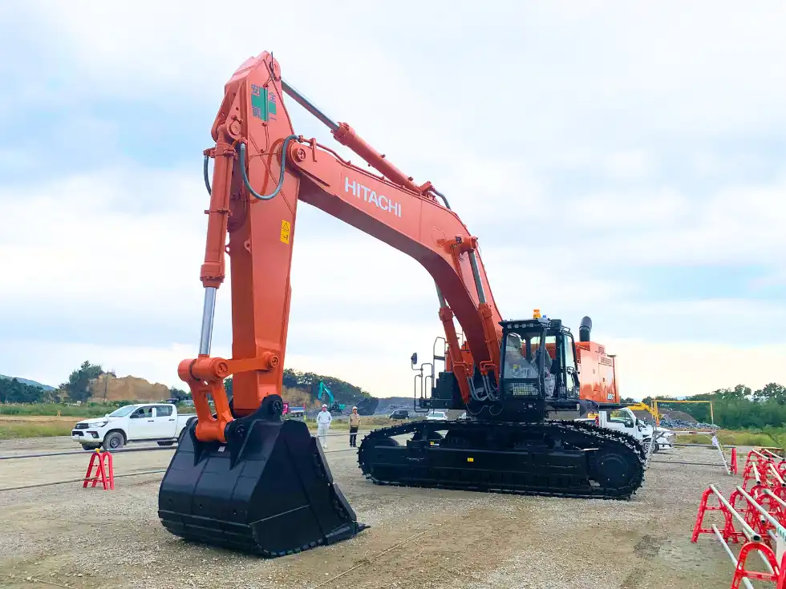
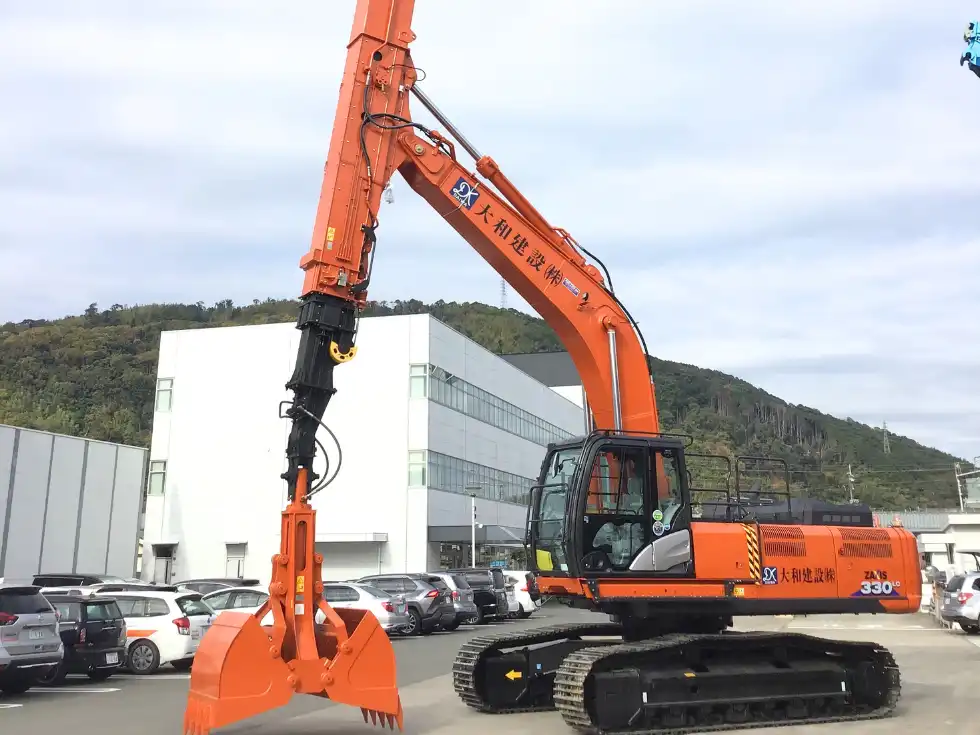
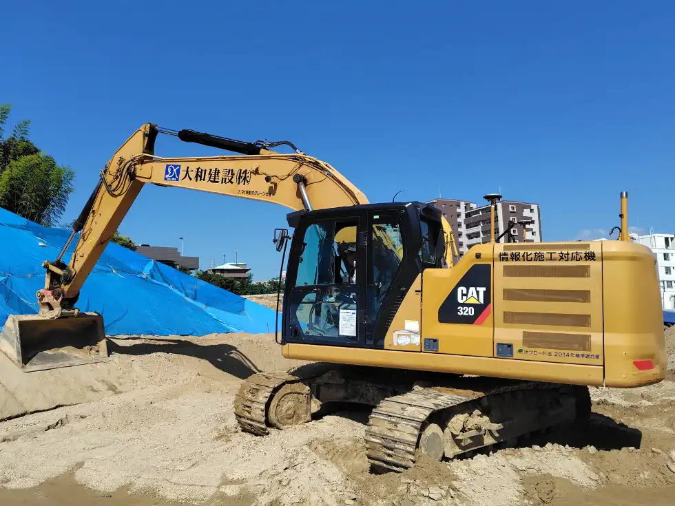
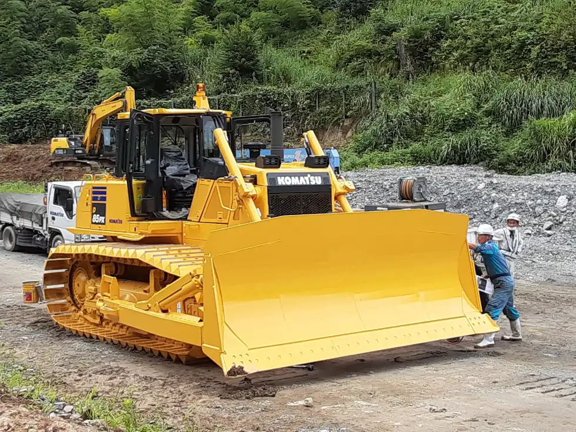
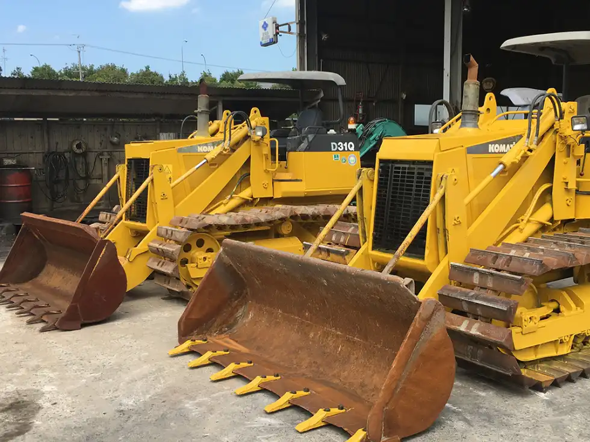
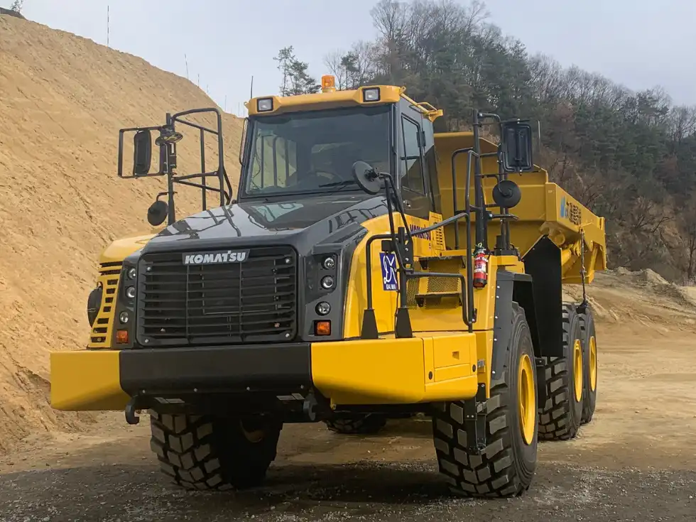
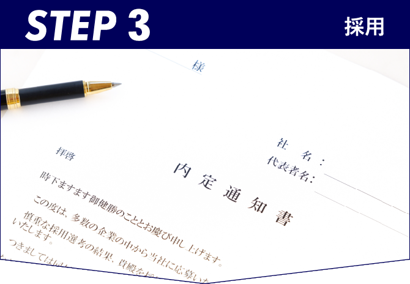

未開拓地や改良区画を大型重機で造成し、道路・宅地といった基盤を築く仕事。
重機オペレーターとして1日を通して機械を操り、インフラ整備の最前線で力を発揮でき、その責任と技術に見合った給与・福利厚生を整えています。
仕事は現場作業がメインですが、経験を積むことで職長や現場監督などへのキャリアアップも可能です。
現場を支えるプロフェッショナルとして、私たちと共に働きませんか？
当社の重機オペレーターの業務は、バックホウやブルドーザー等の大型重機を動かして、山を平らにしたり、道路や宅地の土台を作る大規模造成工事です。
昨日まで山だった場所が、今日は平地になっている——そんなダイナミックな変化を自分の手で生み出せるのが、この仕事のいちばんの魅力です。街の暮らしを足元から支えている、と実感できる瞬間がたくさんあります。
これらは特別な才能ではなく、現場で少しずつ身につくものです。「わからないことは聞く」「気になったら確認する」——その姿勢さえあれば大丈夫。
現場経験を積んでいくことで、職長候補から職長へとステップアップでき、さらなる高みを目指せば、施工管理・現場責任者へと成長していくキャリアの道も広がっています。
大和建設では、誠実に、真面目に、前向きに、諦めない心をモットーにしております。
工事経験の少ない方や、自信のない方でも、まずはご相談いただけましたら、転職検討に際しての不安な点を一つずつ解消させていただきます。
Q1.転勤はありますか？
A.基本的にはありません。ただ、地域貢献のため災害復旧活動などで遠方支援に行った実績があり、その際は出張手 当を支給します。
Q2.資格取得支援はしてもらえますか？
A.はい、可能です。資格取得支援制度がありスキルを磨きながら、さらなるキャリアアップが可能です！
Q3.昇給はありますか？
A.あります。無事故手当や皆勤手当などの手当も有しておりますので、詳しくは採用担当までお問い合わせください。
90トン級の超大型バックホウをはじめ、
多種多様な重機・建機を自社保有。
規模や内容を問わず、幅広い施工に対応します。

日立／90トンクラス
最新ISUZU製エンジンを搭載した90トン級の超大型油圧ショベル。圧倒的なパワーで大規模造成の最前線を支えます。

日立／33トンクラス
高出力エンジンと最新油圧システムを搭載。深掘りから幅広い掘削まで、安定した作業をこなす主力機です。

3Dマシンコントロール搭載
3Dマシンコントロール技術を搭載。設計データに沿って効率的かつ正確に施工でき、経験を問わず高精度な仕上がりを実現します。

コマツ／28t級ブルドーザー
HST（ハイドロスタティックトランスミッション）を搭載した28t級の湿地仕様ブルドーザー。軟弱地盤でも安定した整地作業が可能です。

コマツ／30馬力クラス
優れた機動性と燃費効率を備えた小型ブルドーザー。地下掘削などの狭い現場でも小回りの利く作業を実現します。

コマツ／アーティキュレートダンプ
悪条件の現場でも力を発揮するアーティキュレートダンプトラック。大量の土砂を効率よく運搬します。
新たな暮らしと、重機オペレーターとしてのキャリアを両立したい方へ。
ご応募はフォームから24時間受付中です。
創業65年以上。官公庁案件を含む公共工事で、
地域インフラを支え続けてきました。
造成・下水道・護岸整備など、街の暮らしを守る現場を
幅広く手がけています。
▼ 各工事カテゴリをタップすると、施工実績の一覧が開きます。
ご応募から内定までのプロセスはシンプル。
ご質問や不安な点があれば、
いつでもお気軽にご相談ください。
ご応募内容を確認後、担当者よりご連絡いたします。
※オンライン可

新たな暮らしと、重機オペレーターとしてのキャリアを両立したい方へ。
ご応募はフォームから24時間受付中です。